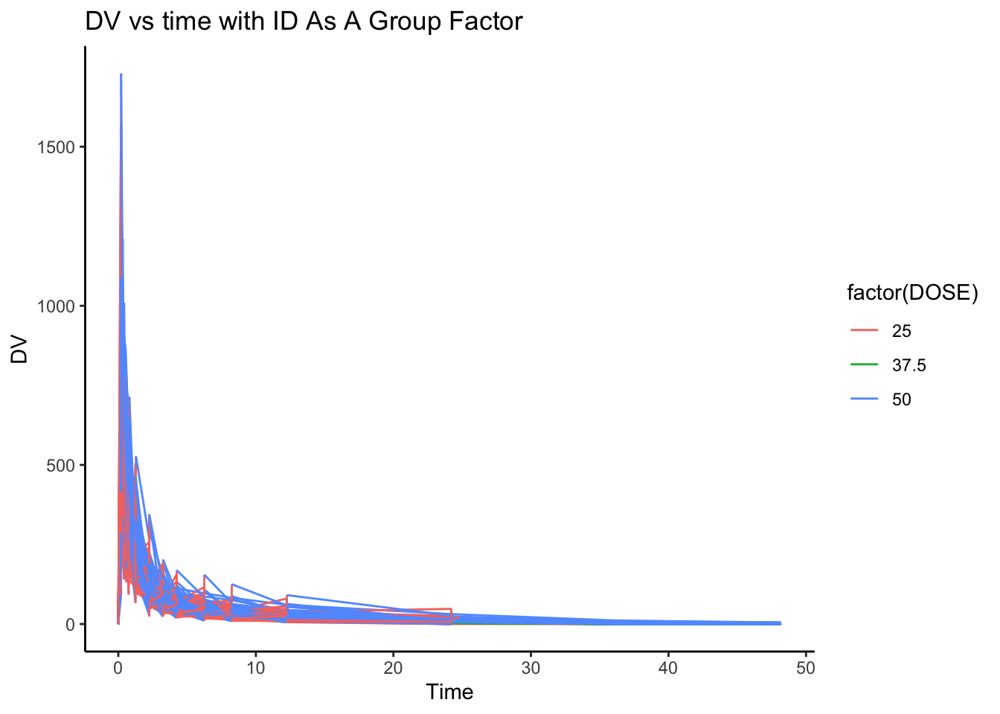
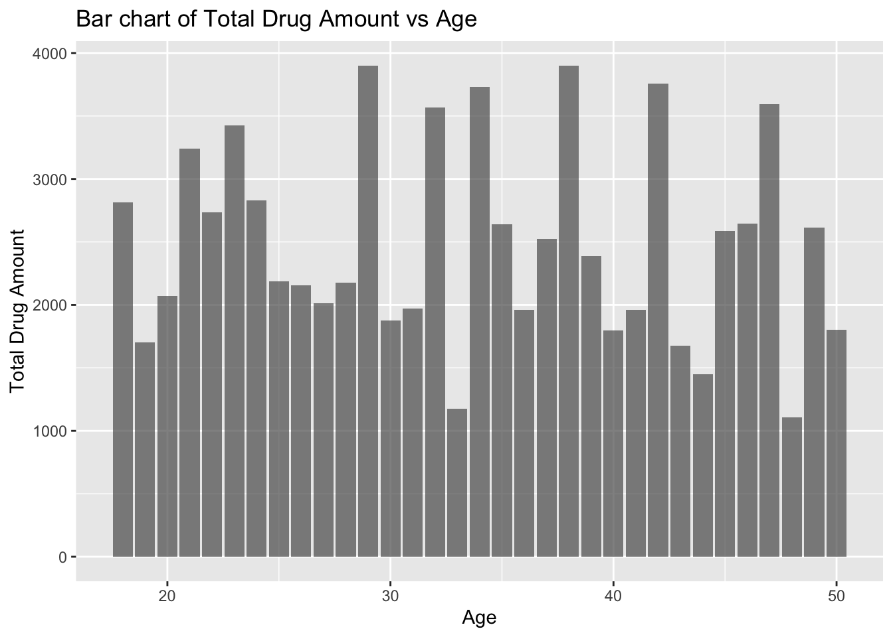
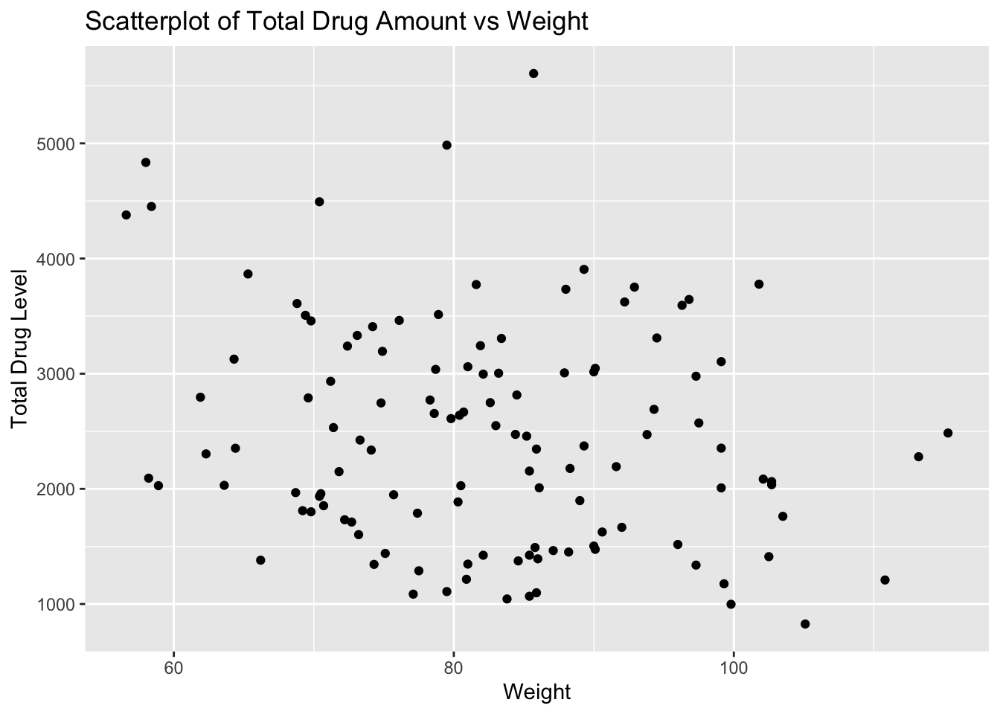
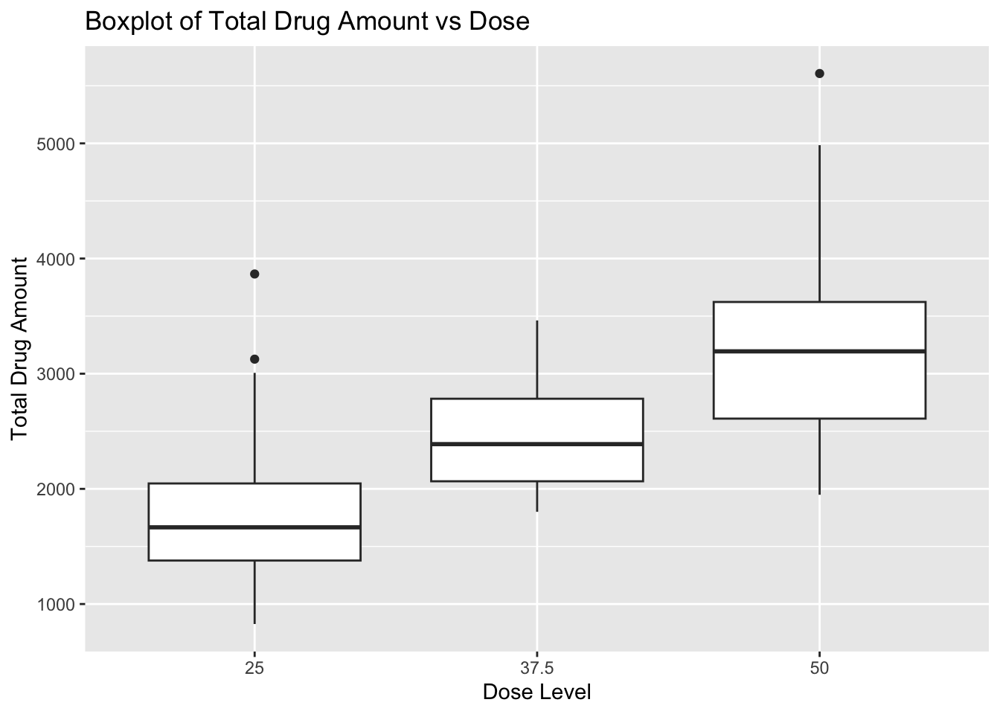
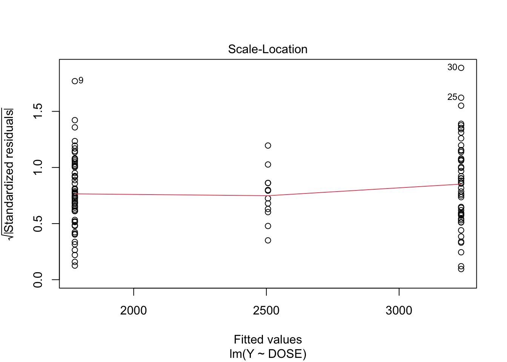
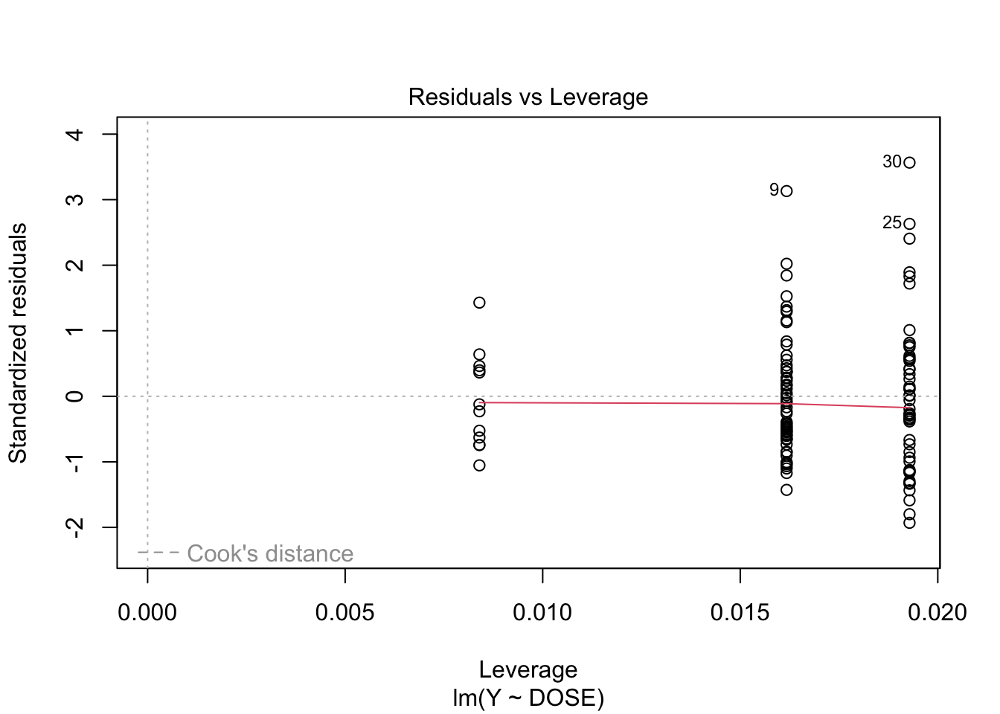
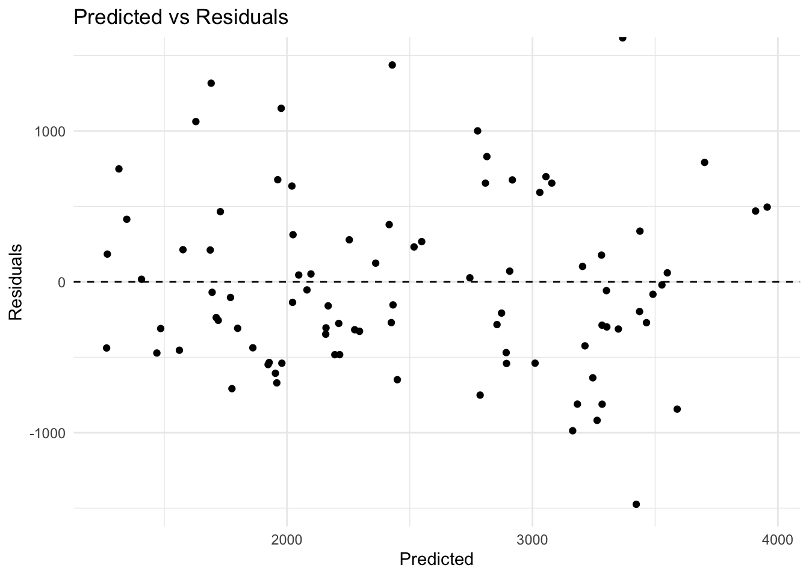

Create plot of DV by time with ID as a group factor
# Plotting using ggplot2p1 <-ggplot(model_data, aes(x = TIME, y = DV, group = ID, color =factor(DOSE))) +geom_line() +labs(title ="DV vs time with ID As A Group Factor",x ="Time",y ="DV") +theme_classic()plot(p1)

Data Cleaning
# Filter rows so that OCC = 1 and remove rows where OCC = 2dc1 <- model_data %>%filter(OCC ==1)# Sum DV of each IDdc2 <- dc1 %>%filter(TIME !=0) %>%# ! to exclude observations with TIME = 0group_by(ID) %>%summarise(Y =sum(DV))# Now data only includes TIME == 0dc3 <- dc1 %>%filter(TIME ==0)# Use left_join to combine dc2 and dc3 togetherdc4 <-left_join(dc2, dc3, by ="ID")dc5 <- dc4 %>%mutate(SEX =factor(SEX),RACE =factor(RACE)) %>%select(Y, DOSE, AGE, SEX, RACE, WT, HT) # to only include these variables in the dc5 dataframestr(dc5) # to make sure the combined dataframe inludes the correct variables
# A bar chart of total drug amount vs agedc6 <- dc5 %>%group_by(AGE) %>%summarize(drug_avg =mean(Y))p1 <-ggplot(dc6, aes(x = AGE, y = drug_avg)) +geom_bar(stat ="identity", position ="dodge", alpha =0.7) +labs(title ="Bar chart of Total Drug Amount vs Age",x ="Age",y ="Total Drug Amount") plot(p1)

# scatterplot of total drug amount vs weightp2 <-ggplot(dc5, aes(x = WT, y = Y)) +geom_point() +labs(title ="Scatterplot of Total Drug Amount vs Weight",x ="Weight",y ="Total Drug Level") plot(p2)

# boxplot of total drug by dose levelp3 <-ggplot(dc5, aes(x =as.factor(DOSE), y = Y)) +# needed to make dose a factor firstgeom_boxplot() +labs(title ="Boxplot of Total Drug Amount vs Dose",x ="Dose Level",y ="Total Drug Amount") plot(p3)

# boxplot of total drug by sexp4 <-ggplot(dc5, aes(x =as.factor(SEX), y = Y)) +#same thing with sex geom_boxplot() +labs(title ="Boxplot of Total Drug Amount vs Sex",x ="Sex",y ="Total Drug Amount") plot(p4)
# bar chart of total drug amount vs racedc7 <- dc5 %>%group_by(RACE) %>%summarize(mean_Y =mean(Y),sd_Y =sd(Y) ) p5 <-ggplot(dc7, aes(x = RACE, y = mean_Y, fill = RACE)) +geom_bar(stat ="identity", position ="dodge", alpha =0.7) +geom_errorbar(aes(ymin = mean_Y - sd_Y, ymax = mean_Y + sd_Y)) +labs(title ="Bar Chart with Error Bars of Total Drug Level vs Race",x ="Race",y ="Mean Total Drug Amount") plot(p5)
Model Fitting
Using Linear Models…
# load required librarieslibrary(tidymodels)
# I was so lost so used ChatGPT to fit a linear model to Y using variable of interest (DOSE)dc5_lm1 <-linear_reg() %>%set_engine("lm") %>%fit(Y ~ DOSE, data = dc5) # learned that you have to include data = for this oneprint(dc5_lm1)
parsnip model object
Call:
stats::lm(formula = Y ~ DOSE, data = data)
Coefficients:
(Intercept) DOSE
323.06 58.21
# RMSE and R-squared predictionsdc5_lm1_pred <-predict(dc5_lm1, new_data = dc5) dc5_lm1_pred
# ggplot did not want to cooperate so I am going to try lmlmY <-lm(Y ~ DOSE, data = dc5)plot(lmY)


Creating Metrics Using RMSE and R-squared predictions
#R-bloggers shows you how to use rmse by hand..rmse <-sqrt(mean((dc5$Y -predict(lmY, data = dc5))^2))#rmse = 666.46rsquared <-cor(dc5$Y,predict(lmY, data = dc5))^2#rsquared = 0.5156
Creating Logistic Regression Model for Sex and DOSE
# using glm log_model1 <-glm(SEX ~ DOSE, family ="binomial", data = dc5) #have to tell r that dependent variable is binary. Best explained in https://stat.ethz.ch/R-manual/R-devel/library/stats/html/family.html however I'm still unsure what ~ meanslog_model1
Call: glm(formula = SEX ~ DOSE, family = "binomial", data = dc5)
Coefficients:
(Intercept) DOSE
-0.76482 -0.03175
Degrees of Freedom: 119 Total (i.e. Null); 118 Residual
Null Deviance: 94.24
Residual Deviance: 92.43 AIC: 96.43
Creating Predictions
# had to use ChatGPT to build this code becuase I was so lost predictions <-predict(log_model1, newdata = dc5, type ="response")bin_pred <-if_else(predictions >0.5,1,0)truth <-factor(dc5$SEX, levels =c(0,1))estimate <-factor(bin_pred, levels =c(0,1))model_metrics <-tibble(truth = truth, estimate = estimate)test_accuracy <- yardstick::accuracy(data = model_metrics, truth = truth, estimate = estimate) # learned that yardstick is a cool tool that kind of does the work for you using tidymodels# Obtain pred probabilities from log_model1predicted_prob <-predict(log_model1, type ="response")# Now to create the ROC curvelibrary(pROC)
Type 'citation("pROC")' for a citation.
Attaching package: 'pROC'
The following objects are masked from 'package:stats':
cov, smooth, var
probs_roc_curve <-roc(dc5$SEX, predicted_prob)
Setting levels: control = 1, case = 2
Setting direction: controls < cases
#Now to create the AUCprobs_auc_curve <-auc(probs_roc_curve)# Creating another logistic regression model for SEX + the other predictorslog_model2 <-glm(SEX ~ Y + DOSE +RACE + WT + HT, family ="binomial", data = dc5) #again using glm becuase ggplot failed me but I think I like glm more since I don't have to put anything in ""
Creating Predictions for log_model2
predicted_probs2 <-predict(log_model2, type ="response") #still not sure what response means...pred_bin2 <-if_else(predicted_probs2 >0.5, 1,0)# So it was at this moment that I kept recieving errors and after using the internet and friendly help, I realized I forgot to convert SEX to not only a factor, but a binary (numeric) factordc5$SEX <-as.factor(if_else(dc5$SEX ==1,0,1))pred_bin <-factor(pred_bin2) # now I have to assign SEX back to pred_bin2 but its the same set as above. I asked for help on this tibble_metrics2 <-tibble(truth = dc5$SEX, estimate =as.factor(pred_bin))probs_roc_curve2 <-roc(dc5$SEX, pred_bin2)
Setting levels: control = 0, case = 1
Setting direction: controls < cases
probs_auc_curve2 <-auc(probs_roc_curve2)
Exercise 10
Creating predictions for the last two models using another method. The first model will use the DOSE variable as a predictor, and the second model will include all the remaining predictors.
# Create random numbers by using set.seed from tidymodels examplerngseed =1234set.seed(rngseed)dc5 <- dc5 %>%select(Y, DOSE, AGE, SEX, WT, HT) # Select only the specified variables w/o Race# See is it workedstr(dc5)
# Create training data, wish me luckdata_split <-initial_split(dc5, prop =3/4) # 3/4 of the data into the training set # Create dataframes for the two sets:train_data <-training(data_split)test_data <-testing(data_split)## Model Assessment 1# Now I will try to create a linear regression model that predicts outcome 'Y' based on the variable DOSE.dc5_lm2 <-linear_reg() %>%set_engine("lm") %>%#learned that all this does is set the linear model to our model set_mode("regression") %>%#replaces glm stepfit(Y ~ DOSE, data = train_data)tidy(dc5_lm2) #supposed to organize the results into a table with summary stat values
# Create predictions for DOSE model abovedc5_lm2_pred <-predict(dc5_lm2, new_data = train_data)# Combine predicted values with observeddc5_lm2_pred <-bind_cols(dc5_lm2_pred, train_data)# Create metricslibrary(caret)
Loading required package: lattice
Attaching package: 'caret'
The following objects are masked from 'package:yardstick':
precision, recall, sensitivity, specificity
The following object is masked from 'package:purrr':
lift
lm2_metric <-rmse(dc5_lm2_pred, truth = Y, estimate = .pred) # now I don't have to do it by hand# rmse = 702# Creating a linear regression model that predicts 'Y' using the remaining variables as predictors dc5_lm3 <-linear_reg() %>%set_engine("lm") %>%set_mode("regression") %>%fit(Y ~ ., data = train_data) # I learned you use the . to symbolize all the variablestidy(dc5_lm3)
# Create a prediction from the dataframe of this model with all the other variablesdc5_lm3_pred <-predict(dc5_lm3, new_data = train_data)# Combine predicted with observeddc5_lm3_pred <-bind_cols(dc5_lm3_pred, train_data) # Create the metrics for this modellm3_metric <-rmse(dc5_lm3_pred, truth = Y, estimate = .pred)# rmse = 627# Creating the null model and calculating RMSEtrain_null <-null_model(mode ="regression") %>%set_engine("parsnip") %>%#had to look this one up fit(Y ~1, data = train_data)train_null_metric <- train_null %>%predict(train_data) %>%bind_cols(train_data) %>%metrics(truth = Y, estimate = .pred)
Warning: A correlation computation is required, but `estimate` is constant and has 0
standard deviation, resulting in a divide by 0 error. `NA` will be returned.
print(train_null_metric)
# A tibble: 3 × 3
.metric .estimator .estimate
<chr> <chr> <dbl>
1 rmse standard 948.
2 rsq standard NA
3 mae standard 765.
# lm3 performed better## Model Performance Assessment 2# Now I'm going to evaluate lm2 and lm3 models using a 10-fold cross validation. Had to use ChatGPT to help me code for this section.# First, I'm going to use the model with only DOSE as a predictorset.seed(rngseed)# Set the cross-validation folds = 10folds <-vfold_cv(train_data, v =10)linear_mod <-linear_reg() %>%set_engine("lm")linear_wf <-workflow() %>%add_model(linear_mod) %>%add_formula(Y~DOSE)# Create resamplingdose_re <-fit_resamples(linear_wf, resample = folds)collect_metrics(dose_re)
# A tibble: 2 × 6
.metric .estimator mean n std_err .config
<chr> <chr> <dbl> <int> <dbl> <chr>
1 rmse standard 691. 10 67.5 Preprocessor1_Model1
2 rsq standard 0.512 10 0.0592 Preprocessor1_Model1
# Second, I'm going to use the model with the remaining variables as predictorsset.seed(rngseed)linear_wf_remain <-workflow() %>%add_model(linear_mod) %>%add_formula(Y ~ .) remain_re <-fit_resamples(linear_wf_remain, resamples = folds)collect_metrics(remain_re)
# A tibble: 2 × 6
.metric .estimator mean n std_err .config
<chr> <chr> <dbl> <int> <dbl> <chr>
1 rmse standard 646. 10 64.8 Preprocessor1_Model1
2 rsq standard 0.573 10 0.0686 Preprocessor1_Model1
#the model that uses all remaining variables as predictors performed better# This time I will run the CV fits again using a different seedset.seed(5480) folds2 <-vfold_cv(train_data, v =10)linear_mod2 <-linear_reg() %>%set_engine("lm")# For the DOSE = predictor modellinear_wf2 <-workflow() %>%add_model(linear_mod2) %>%add_formula(Y~DOSE)dose_re2 <-fit_resamples(linear_wf2, resample = folds2)collect_metrics(dose_re2)
# A tibble: 2 × 6
.metric .estimator mean n std_err .config
<chr> <chr> <dbl> <int> <dbl> <chr>
1 rmse standard 705. 10 50.5 Preprocessor1_Model1
2 rsq standard 0.471 10 0.0621 Preprocessor1_Model1
Now, we’ll create some visuals to compare our observed vs. predicted values for the first 3 models we fit without CV. To do so, we need to first combine them into one dataframe with labels to differentiate which values belong to each model. The base code was generated with help from Microsoft Copilot in Precise mode and modified to the specifics of the set.
# Load necessary librarieslibrary(dplyr)library(ggplot2)# Add model labelsdc5_lm2_pred <- dc5_lm2_pred %>%mutate(model ="Model 1")dc5_lm3_pred <- dc5_lm3_pred %>%mutate(model ="Model 2")# Add model label for null modeltrain_null_pred <- train_null %>%predict(train_data) %>%bind_cols(train_data) %>%mutate(model ="Null Model")# Combine the null model data frame with the other modelscombined_data <-bind_rows(dc5_lm2_pred, dc5_lm3_pred, train_null_pred)# Rename the columns for claritynames(combined_data)[names(combined_data) ==".pred"] <-"Predicted"names(combined_data)[names(combined_data) =="Y"] <-"Observed"# Create the plotggplot(combined_data, aes(x = Observed, y = Predicted, color = model)) +geom_point() +scale_x_continuous(limits =c(0, 5000)) +scale_y_continuous(limits =c(0, 5000)) +geom_abline(intercept =0, slope =1, linetype ="dashed", color ="black") +theme_minimal() +labs(title ="Observed vs Predicted Values", x ="Observed", y ="Predicted", color ="Model") +theme(legend.position ="bottom")
We can see that Model 1, which only used DOSE as a predictor, has 3 distinct horizontal lines. This would be due to the 3 different dose levels in the dataset; the lowest dose is at the bottom of the graph while the highest is at the top. The null model just cuts straight across the middle, which is to be expected since the “predicted” values are just copies of the observed ones. Model 2 looks the best, but isn’t perfect, as we can see some patterns in the distribution. We’ll now plot the residuals for Model 2 with help from Microsoft Copilot again.
# Calculate residualsdc5_lm3_pred <- dc5_lm3_pred %>%mutate(Residuals = Y - .pred)# Create the plotggplot(dc5_lm3_pred, aes(x = .pred, y = Residuals)) +geom_point() +geom_hline(yintercept =0, linetype ="dashed", color ="black") +coord_cartesian(ylim =c(min(dc5_lm3_pred$Residuals), abs(min(dc5_lm3_pred$Residuals)))) +theme_minimal() +labs(title ="Predicted vs Residuals", x ="Predicted", y ="Residuals")

We see that there are more and higher negative values than our positive values. We’ll evaluate the uncertainty in the model by bootstrapping to further evaluate the weaknesses of our model.
#Reset the random seed to the same value as beforeset.seed(rngseed)# Load necessary librarylibrary(rsample)# Create 100 bootstrap samplesbootstraps <-bootstraps(train_data, times =100)# Initialize a data frame to store predictionspredictions_df <-data.frame()# Loop over each bootstrap samplefor(i in1:100) {# Extract the bootstrap sample bootstrap_sample <-analysis(bootstraps$splits[[i]])# Define a new model structure model <-linear_reg() %>%set_engine("lm") %>%set_mode("regression")# Fit the model to the bootstrap sample fitted_model <- model %>%fit(Y ~ ., data = bootstrap_sample)# Make predictions for the original training data predictions <-predict(fitted_model, new_data = train_data)# Store the predictions and observed values in the data frame predictions_df <-rbind(predictions_df, data.frame(Observed = train_data$Y, Predicted = predictions$.pred, Model =paste("Bootstrap", i)))}
Now that we’ve created bootstrap predictions and stored them, we can create some visuals.
# Add observed values to the predictions data framepredictions_df$Observed <-rep(train_data$Y, times =100)# Compute the median and 89% confidence intervalspreds <-sapply(split(predictions_df$Predicted, predictions_df$Observed), function(x) quantile(x, c(0.055, 0.5, 0.945)))# Convert to a data framepreds_df <-as.data.frame(t(preds))names(preds_df) <-c("Lower", "Median", "Upper")# Add observed values to the data framepreds_df$Observed <-as.numeric(rownames(preds_df))# Create the plotggplot(preds_df, aes(x = Observed)) +geom_point(aes(y = Median), color ="blue") +geom_errorbar(aes(ymin = Lower, ymax = Upper), color ="red") +geom_point(aes(y = dc5_lm3_pred$.pred), color ="black") +geom_abline(intercept =0, slope =1, linetype ="dashed", color ="black") +coord_equal() +theme_minimal() +labs(title ="Observed vs Predicted Values", x ="Observed", y ="Predicted")
The black dots are the predictions from the original model on the training data. The blue points are the median predictions from the bootstrap samples. The red lines are the 89% confidence intervals for the predictions. There’s a pretty large spread around the line, which indicates that there may be a good amount of error in the mode’ls predictions. Most of the black points tend to fall decently far above or below the line, indicating a poor fit from the original model on our training data. While some of the confidence interval lines indicate that a few of our median predictions are close to the line, the majority of them still fall above the line, indicating underpredicting.
Exercise 10: Part 3
Using the fit from Model 2 of the training data to make predictions of the test data.
# Make predictions on training data train_pred <-predict(dc5_lm3, new_data = train_data)print(train_data)
Overall, it would appear that the model with all the variables as predictors (Model 2) has the better fit compared to the model only Dose was used as a predictor. This was initially determined by comparing the RMSEs between both models and including a null model as reference. Cross-validation was used to assess for how well a model will perform on data it hasn’t been trained on before. This was why the data was split into 75% of that data going into the train_data vector and the remaining 25% going into the test_data vector. Another method that was done to test our model was to use the Bootstrap methods with 100 samples. Model 2 performed relatively well when using bootstrap method. Lastly, the final part of this exercise was to fit the model for our test data.
Model 2 with all variables as predictors seems to be the best model without much overfitting. There were some inconsistenices when measuring RMSE when using the Null model, perhaps it would be better to use other metrics such as MAE or R^2 in the future,